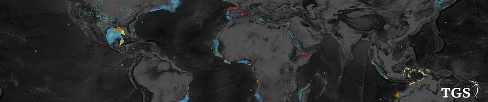

Tuần 08 · Tầng 02 (Feature Pyramid) & Tầng 04 (Region + Boundary Loss)
Kiến Trúc U-Net / FPN, Đồng Bộ Ảnh - Mask & Hàm Mất Mát Ưu Tiên Đường Biên
02 · Backbone & Neck
04 · Loss & Optimization
transforms.v2 + SegFormer + Tự Build
Hợp nhất Ngữ nghĩa sâu (C5) và Định vị sắc nét (C2): Luôn đồng bộ phép biến đổi hình học giữa ảnh và mask bằng nội suy
cv2.INTER_NEAREST cho mask để tránh sinh nhãn thập phân giả dọc đường biên!
Kaggle Classic Benchmark · High-Res Mask
Carvana Image Masking Challenge
Automatically identify the boundaries of the car in an image
Tách nền ô tô giữ trọn các chi tiết mảnh 1–2 pixel như cần ăng-ten (chấm Dice Coefficient đạt tới 0.997+).
Mở cuộc thi trên Kaggle ↗
Kaggle Competition · IoU Threshold Sweep
TGS Salt Identification Challenge
Segment salt deposits beneath the Earth's surface

Phân đoạn trầm tích muối địa chấn chấm theo mAP trên dải ngưỡng IoU khắt khe .
Mở cuộc thi trên Kaggle ↗
Bước 1 · Dùng Thư Viện Chuẩn
Đồng bộ biến đổi
(Image, Mask) bằng torchvision.transforms.v2 & mô hình SegFormer (transformers)
seg_v2_segformer_lib.py — Đồng Bộ (Image, Mask) Với transforms.v2 & SegFormer Dựng Sẵn
mastercv/backbones/fpn_and_edge_loss.py — Tự Xây Dựng FPN & Edge-Weighted BCE+IoU
Checklist Hoàn Thành Tuần 8:
- Chạy thực nghiệm
SegFormer+torchvision.transforms.v2trên Kaggle Carvana hoặc TGS Salt. - Đối sánh độ sắc nét viền mảnh khi thay Dice+BCE chuẩn bằng
EdgeWeightedStructureLosstự build.